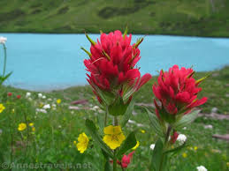

Glacier National Park
Hikes
Explore, Hike

Glacier National Park
Explore, Hike
and Relax!
About
Glacier National Park is 1,538-sq-mi. wilderness area in Montanas Rocky Mountains, with glacier- carved peaks and valleys running into the Canadian border. Its crossed by the mountinous Going-to-the-sun Road. Amoung more than 700 miles of hiking trails, it has a route to photogenic Hidden Lake. Other activites include backpacking, cycling and camping. Diverse wildlife ranges from mountain goats to grizzly bears.

Wildflowers in Glacier Park are one of the few most beautful things of nature you will see. Among the most beloved wildflowers found in Glacier are purple asters, Glacier lilies, and bear grass. Glacier lilies are found on both sides of the park, and grow at elevations ranging from roughly 3000 feet to 7000.